DaoDua/TienGiang,MyTho
ヤシ教団/ミト−
ホーチミンの南西、メコンデルタの入口の街、ミトーである。
ミトーといえばメコン川クルーズと象耳魚といわれる川魚の空揚げ。
ミト−に来たからには私も御多分にもれずメコン川クルーズツアーなどをしてメコンの雄大な流れに身を任せ果樹園などでフルーツ三昧してみようと思う。
そんなお気楽ツアーだが私のの真の目的はツアーの途中に訪れるかつての怪しい教団施設の見学であった。
その名はずばりヤシ教団！ベタな名前ですみません。
このヤシ教壇、仏教とカトリックとイスラム教、カオダイ教さらにホアハオ教をミックスした宗教だったらしいのだが、カオダイ教自体がすでに仏教とカトリックのエッセンスを注入済みなのでさらに混ぜる事もないと思うが、よくわかりません。ちなみにホアハオ教はやはりメコンデルタ一帯で信仰されている仏教系の新興宗教。
このヤシ教団、現在は教団自体が解散しており、単なる跡地なのだがかなりイカレた人工楽園である。
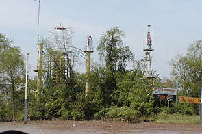
船がメコン川の中州のフーン島に近づくと何やら怪し気な遊具、じゃなくて宗教施設が見えて来る。
もっちろんヤシ教団のものである。早速、上陸し境内を散策する。
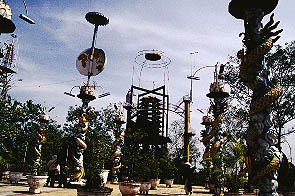
ううっ、かなり奇妙なところだ。
中央の広場のようなところには9本の柱が建っている。
これはカオダイ教の本山でも見られた（というか中国寺院でも良く見られるが）龍の巻き付いた柱。
9体ののぼり龍は9つの支流を持つメコン川の別名の「九龍」に由来するという。
カオダイ教の寺院は建物の中の柱だったがこちらのは露天に柱が建っているだけ。それだけに龍の柱の異様さが際立つ。
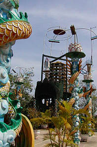
龍の上には蓮の花、そして蛍光灯。マッドテイスト全開です。
その奥には何やら怪し気な参拝装置の複合体がある。
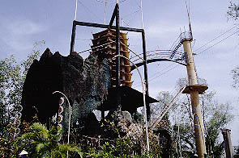 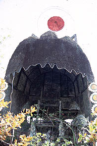
ハリボテのドームの中には廃虚と化した祭壇のようなステージのようなそんな感じのモノが。
横には階段があるので登ってみる。
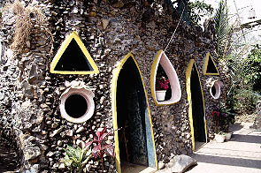
するとそこには丸やら三角の窓を持つ怪しい部屋。人工グロッタのような趣である。中からは楽器の音が聞こえて来る。恐らく観光客向けの演奏なのだろう。
ここから更に階段を登ると上には九重の塔がある。中は吹き抜けで何もないが。未完成だったのだろうか。
更にその裏手には工場のプラントのような怪しさ全開の施設が。
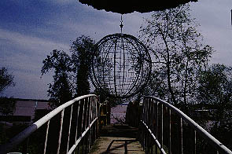 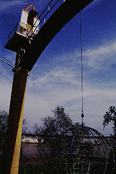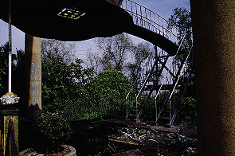
ベトナム全図の地図のハノイとホーチミンのところからにょっきりと10メートル以上はある柱が二本建ち、その二本の柱の最上部はアーチで結ばれている。
アーチの中央からは鉄筋でつくられた地球儀が吊り下げられていてその地球儀を受け止めるように直下に蓮の花の形をした遊園地のコーヒーカップのようなモノが。ここでは仮に蓮台と呼ばせていただく。さらに蓮台には太鼓橋が架けられていて先程のグロッタ風の部屋とを結んでいる。
蓮台の奥にも太鼓橋があり、そこを渡ると今度は階段があり、降りるとベトナム地図のところに到る。という具合。
アーチに到るルートを構成している部分と蓮台へ到るルート部分が交差しながらも全く別の独立したルートを構成しているところが何やら本所羅漢寺の羅漢堂のようではないか。ジャングルジムのような迷路のようなアトラクション。面白いぞ！面白いぞお〜！
あまりにも面白いのであちこち上ったり下りたりしていたら、ガイドさんに「危ナイデスカラ下リテクダサイ〜」といわれてしまった。
一番上のアーチまで上りたかったぜ。
超いいかげんで恐縮ですが大体こんな感じです。
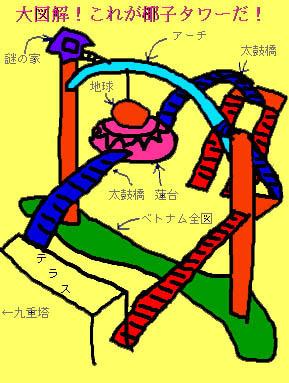
この椰子タワー、立体迷路状になっている事だけでなく教義（イデオロギ−？）を具体的に視覚化している点も興味深い。
例えばハノイとサイゴン（ホーチミン）から建つ2本の柱。それを結ぶアーチは当然南北ベトナム統一祈願といったところだろう。
一方、その統一の象徴、アーチから地球儀が垂れ下がっている事はどう解釈したら良いのだろう？
もしかして「南北統一こそが地球を救う」的な考えなのだろうか。
カオダイ教もそうだが、どうもこの国の新興宗教はスケールが大き過ぎるというか「地球」というものの捉え方のスケール感が歪んでいるような気がしてならない。
もしかしたらベトナムより地球の方が小さいと思ってませんか？大丈夫ですか？
ま、どこの宗教も自分とこの宗教が地球を内包していると考えているケースが多いからいいんですけど。
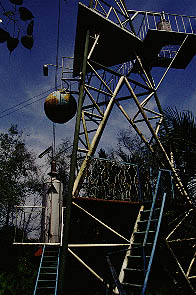 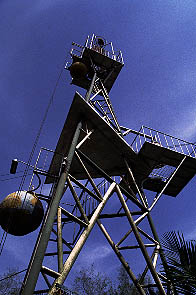 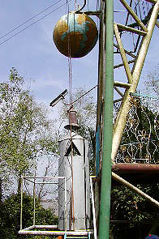
少し奥まったところにはやけにインダストリアルなタワーも。
プロパンガスのタンクのようなモノにはアポロと書かれていた。ロケットのつもりなのだろう。
見ればワイヤーが延びており、そのワイヤーの先にはウインチがあった。
つまり塔の上までこのロケットは飛ぶ事が出来たのだ。今はウインチ自体がぶっ壊れているので宇宙遊泳は難しそうだが。
ここでもまた自分の世界と全世界の逆転現象が起こっている。地球を通り越してその遥か上までボンベ、じゃなくてロケットは飛んでいくのだ。
つまり地球を出発して宇宙へ行くのではなく「どこか」から地球を通り越してまた「どこか」へ行ってしまうのだ。
いいかえれば今の自分から理想の世界への距離の中に全世界が内包されているのだ。
この脳内物質全開のパラダイスをつくったお方はダオズアといい、椰子の実しか食べなかったそうな。
これは仏教の不殺生の考えから来たものなのだろうが、恐らく耕作という概念すらも否定していたのではないだろうか。ひいては生産活動そのものに疑問を持っていたのかも知れない。
というのも椰子の実しか食べないという強烈な意志があったというよりも、その辺にある椰子の実だけでいいや、といういい加減な結果なのではないだろうか？
ハイテク武装している割には何となくそんな呑気な感じがしてくる宗教施設跡でした。
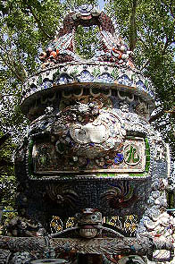 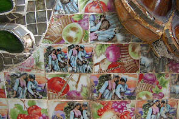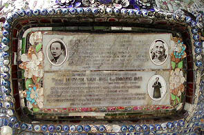 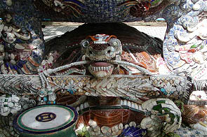
境内の一画には物凄い勢いの陶器モザイクの香炉のようなものがある。良く見ると結構ファンシーな柄の陶器なんぞを使っておられる。
でも全体の印象はウルトラファンキー＆ソウルフル。
船に戻るとガイドさんから「コレハ私カラノぷれぜんとデエ〜ス」といってストローが刺さった椰子の実を手渡された。
うっ、ガイドさん、これはジョークなのですか。
喉が乾いていたのでチューチューと飲んだがそんなに旨いものでもない。
これしか食べなかったのかあ〜、ダオズア爺。人間旨いものを食いたい欲求は常にあるはずだが、それを避けて椰子の実しか食べないって・・・
教義はどんなもんだか知らないが、椰子の実しか食べないという1点だけを取りあげてもやっぱり凄く偉いと思う。
この後、果樹園、ドライフルーツ工場、ココナッツキャンディー工場と連れまわされ試食と称してガンガン食べさせられたのでお腹が一杯になって、結局、もう一つの名物の象耳魚は食べられませんでした・・・
決してダオズア爺を見習った訳ではないのだが。
次へいきましょう
越南珍寺劇場
珍寺大道場 HOME